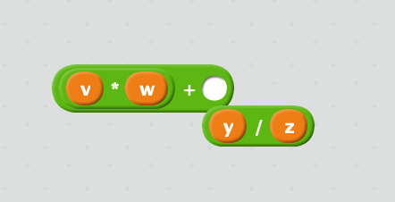

Software and Programming Language Theory
Programming Language Specification
Formal syntax
Additions
Optional typing systems
In similar way to the annotations of model checking tools, the optional type checkers do not neccessarily accept all correct programs.
/*::
type BinaryTree =
{ kind: "leaf", value: number } |
{ kind: "branch", left: BinaryTree, right: BinaryTree }
*/
function sumLeaves(tree /*: BinaryTree*/): number {
if (!tree.left) { // condition was: kind == "leaf"
return tree.value;
} else {
return sumLeaves(tree.left) + sumLeaves(tree.right);
}
}Addition
Remember: Computer Science is old
- First programming languages and compilers apperared in 1950s.
- Classical textbooks, e.g. the first edition of “Dragon book” (Aho, Ullman. Principles of Compiler Design) appeared in 1977.
- Commonly-known technology and mathematics may be outdated.
- Example: “standard” character set: machine-specific character set → ANSI/Locale-specific encoding (C) → UCS-2 (C#, JavaScript) → UTF-8
"üëç".length = 2Programming language specification
Linguistics in general is concerned with three main aspects of a written language:
Syntax — the way in which linguistic elements (words) are put together to form constituents (phrases).
Semantics — the meanings of words and phrases in language.
Pragmatics — the relationship between sentences to the environment in which they occur.
(non-computer languages also have:
morphology — the study of language morphemes, words; the study and description of word formation (as inflection, derivation, and compounding) in language
phonology — the study of the speech sounds used in a language
)
Definitions from Merriam-Webster
See also: Archive: http://www.sbql.pl/Topics/Syntax%20semantics%20and%20pragmatics.html
Programming language specification
Syntax
Syntax of a programming language is concerned with the form of programs: how expressions, commands, declarations and other constructs must be arranged to make a well-formed program.
Definition from D. Watt — Programming Language Design Concepts
In other words: How the program is written and how the compiler/interpreter expects it to be formed.
Syntax: example
Syntax: example
Suppose we want to compute the sum of the product of v and w and the quotient of y and z. Syntax representations:
- mathematical expression: v·w +
yz
- traditional infix notation:
v*w + y/z - LISP prefix S-expression:
(+ (* v w) (/ y z)) - reverse polish notation / stack calculator:
v w * y z / + - graph-based syntax (not related to previous examples) https://noflojs.org/dataflow-noflo/demo/draggabilly.html https://noflojs.org/example/
- some kind of visual “syntax” and structured editors 
- tagged representation (colorForth)
- content-addressed «database» representation
First example is based on F. Turbak, D. Gifford. Design Concepts in Programming Languages
Semantics
Semantics of a programming language is concerned with the meaning of programs: how a well-formed program may be expected to behave when executed on a computer.
Definition from D. Watt — Programming Language Design Concepts
We will spend about a half of the course on this topic, but today we discuss just the syntax.
Semantics: example
A well-formed formula x*y + z may have meaning:
- compute the specified formula to get a numerical value as an answer for specific values of x, y, z
- integral operations for integers
- floating-point operations for floating-point number
- logical or lattice operations (disjunction and conjunction, max and min)
- (python) replicate y times the string stored in x and concatenate it with z converted to string
- just a symbolic expression for the further optimization
- etc.
Pragmatics
A programming language’s pragmatics is concerned with the way in which the language is intended to be used in practice.
Definition from D. Watt — Programming Language Design Concepts
No general consensus on the definition. Two sides:
- human interface (how the programmers are expected to design and implement programs in practice: design patterns, concurrency support and specific model, foreign function interfaces, packaging system; exception-based control flow :)
- implementation details (specific garbage collection algorithm, semantics-preserving optimizations)
Note: Evaluation strategy (strict / lazy) is a part of semantics (because the change of strategy changes the meaning of the same syntactic formula).
Formal specification
Our objective is to get a precise mathematical description of a program.
Each part of language specification must be implemented in mathematical terms.
Syntax
List<Char> ⟶ AbstractSyntaxTree
Syntax: relation to formal languages
(regular ⊂ context-free ⊂ context-sensitive ⊂ unbounded)
We could make a relation between programs and formal languages in many ways:
language Lwf, containing all well-formed (syntactically correct) programs
language Lwt ⊆ Lwf, containing all well-typed (runnable) programs
Lwf ∖ Lwt — “syntax gap”, well-formed programs which are not well-typed
language Lc ⊆ Lwt, containing all semantically-correct programs (running without errors)
Lwt ∖ Lc — “typing gap”, well-typed programs which throw errors in run-time
It is obvious that for almost every practical (“Turing complete”) programming language Lc is unbounded. For the modern languages, Lwf is usually context-free or some subset of context-free languages (Deterministic Context-Free Languages, unambiguous languages which can be accepted by deterministic pushdown automaton and therefore can be parsed in O(n)).
Lwt may be decidable, but usually decidability is not proven. Compiler freezes may be caused by undecidability of type checking.
Lexical analysis
List<Char> ⟶ List<Token>
Traditionally decision problem of Lwf -membership (well-formedness of a program) is split by two parts:
- lexical analysis transforms a sequence of characters to a sequence of tokens (marked groups of characters, like identifiers, integers, etc.):
int main (int argc, char argv)
int main ( int argc , char argv )
KEYWORD IDENTIFIER LPAR KEYWORD IDENTIFIER COMMA KEYWORD IDENTIFIER RPAR- usually lexical specification of the language is regular
- Unicode standard defines base categories for a lexical analysis (identifier start, identifier, digit, punctuation etc.)
Syntax analysis
List<Token> ⟶ AbstractSyntaxTree
- Syntax analysis transforms a sequence of tokens to a syntax tree.
- concrete syntax: the syntax of a language including all the features visible in the source code such as parentheses and delimiters;
- abstract syntax: the high-level description of a language structure independent of machine-oriented structures and encodings.
 Source: http://azu.github.io/slide/JSojisan/resources/ast-is-true.png
Source: http://azu.github.io/slide/JSojisan/resources/ast-is-true.png
{kind=link}
Abstract Syntax Tree
— a representation of an abstract syntax of a program

Multiple representations of concrete syntax may correspond to a single abstract syntax tree.
Language specification
Foraml languages (which are (possibly infinite) subsets of strings of some alphabet: Σ*) usually have a finite description, which is called “grammar”.
- generative grammar: how to generate all strings of the language starting from a single “start” symbol
- analytic grammar: how to get an abstract syntax tree (a tree of rule applications) from a given string
BNF: Backus Normal Form
(Backus-Naur Form, by Dijkstra, because “it is not a normal form”)
During the development of ALGOL 60, John Backus proposed a notation for context-free grammars:
group of characters named expr is denoted as
<expr>;character constants are quoted:
"("sequence of constants and groups defines a sequence:
"(" <expr> ")"group of characters is defined by an operator
::=:<expr> ::= "(" <atom> ")"definitions may use recursion:
<parens> ::= "" | "(" <parens> ")"at the right side of the definition operator the alternative operator | is allowed:
<expr> ::= <expr> | <expr> <add-operation> <atom>
BNF is the generative grammar specification language.
BNF example
<syntax> ::= <rule> | <rule> <syntax>
<rule> ::= <opt-whitespace> "<" <rule-name> ">" <opt-whitespace> "::=" <opt-whitespace> <expression> <line-end>
<opt-whitespace> ::= " " <opt-whitespace> | ""
<expression> ::= <list> | <list> <opt-whitespace> "|" <opt-whitespace> <expression>
<line-end> ::= <opt-whitespace> <EOL> | <line-end> <line-end>
<list> ::= <term> | <term> <opt-whitespace> <list>
<term> ::= <literal> | "<" <rule-name> ">"
<literal> ::= '"' <text> '"' | "'" <text> "'"BNF specifications
PEG: Parsing Expression Grammar
Analytical grammar formalism, a superset of regular expressions:
- atomic expressions: empty string ε, terminal symbol (constant), non-terminal symbol (rule reference)
- sequence: e1 e2
- ordered choice: e1 / e2
- Kleene star (zero or more): e*
- “plus” (one or more): e+
- optional: e?
- positive lookahead: &e
- negative lookahead: !e
Left recursion
Most direct PEG implementations do not support left recursion in grammar. Parsing of the following grammar will not terminate:
Value ← [0-9.]+ / '(' Expr ')'
Product ← Expr (('*' / '/') Expr)*
Sum ← Expr (('+' / '-') Expr)*
Expr ← Product / Sum / ValueRewriting grammars to remove left recursion is possible (see “Dragon book”).
Infix operators
Infix mathematical notation is probably the only desirable part of syntax which don’t have nice representations as an S-expression
(defun triangle (number-of-rows) ; Version with
; incrementing counter.
"Add up the number of pebbles in a triangle.
The first row has one pebble, the second row two pebbles,
the third row three pebbles, and so on.
The argument is NUMBER-OF-ROWS."
(let ((total 0)
(row-number 1))
(while (<= row-number number-of-rows)
(← total (+ total row-number))
(← row-number (1+ row-number)))
total))Precedence and associativity
Infix operators are complicated for parsing:
- operator precedence:
a * b + c,a + b * c - associative operators:
a + b + c - left-associative operators: division
a / b / c⟶(a / b) / c - right-associative operators: assignment
a = b = c⟶a = (b = c) - non-associative operators:
a < b < cis invalid in C#
The non-associatitvity is hard to represent in syntax, so it is usually a property of semantics.
TDOP algorithm
Top-down operator precedence parser
Operator binding power: 1 + 2 * 4
- right binding power of “+” is 10
- left binding power of "*" is 20
See also:
- Interactive example http://l-lang.org/blog/TDOP---Pratt-parser-in-pictures/
- simple implementation http://javascript.crockford.com/tdop/tdop.html
- Nitra language workbench (russian project): https://github.com/rsdn/nitra
- original Pratt paper: https://tdop.github.io
Attribute grammar
If a rule of the grammar is matched, compute an additional information to attach to an AST node.
Expr1 → Expr2 + Term [ Expr1.value = Expr2.value + Term.value ]
Expr → Term [ Expr.value = Term.value ]
Term1 → Term2 * Factor [ Term1.value = Term2.value * Factor.value ]
Term → Factor [ Term.value = Factor.value ]
Factor → "(" Expr ")" [ Factor.value = Expr.value ]
Factor → integer [ Factor.value = strToInt(integer.str) ]Live example of calculator implemented as attribute PEG grammar: http://pegjs.org/online
Parser combinators
Special technique of parser implementation for functional languages (required support of higher-order functions)
type Parser<U, V> = Iterable<U> → V
or<U,V> : (left : Parser<U, V>, right : Parser<U, V>) → Parser<U, V>
and<U,V> : (left : Parser<U, V>, right : Parser<U, V>) → Parser<U, V>
repeat<U, V> : (p : Parser<U, V>) → Parser<U, Array<V>>
str : string → Parser<string, string>Parser combinators
Advantage: simple, embedded grammar specification
Disadvantage: hard to reason about
Example implementations:
- Parsec (Haskell)
- Parsimmon (JavaScript)
- Boost::Spirit (C++)
Modern algorithms and implementations
Contex-free grammar parsers:
- theoretical complexity bound: reduced by Valiant to boolean matrix multiplication, O(n2.3728639) with Coppersmith-Wingorad multiplication; Leslie G. Valiant (1975). “General context-free recognition in less than cubic time”. Journal of Computer and System Sciences 10 (2): 308–315. doi:10.1016/s0022-0000(75)80046-8.
- LL(k), LR(k), LALR(k) (c.f. Aho, Ullman “Principles of Complier Design” and ANTLR )
- Earley parser (used in NLP): O(n3) for general context-free grammar, O(n2) for unambiguous grammar, linear time for some deterministic context-free languages Aycock, John; Horspool, R. Nigel (2002). Practical Earley Parsing. The Computer Journal 45. pp. 620–630. doi:10.1093/comjnl/45.6.620
- GLR: O(n3) upper bound, complexity is lower for “more deterministic” grammars, O(n) for deterministic grammars
- GLL: recent memoization-based algorithm allowing the parser combinator implementation.
Non-context-free:
Non-context-free syntax
- C++ (templates are Turing-complete and type-aware)
template<bool V> struct answer { answer(int) {} bool operator()(){return V;}};
template<bool no, bool yes, int f, int p> struct IsPrimeHelper
: IsPrimeHelper<p % f == 0, f * f >= p, f + 2, p> {};
template<bool yes, int f, int p> struct IsPrimeHelper<true, yes, f, p> { using type = answer<false>; };
template<int f, int p> struct IsPrimeHelper<false, true, f, p> { using type = answer<true>; };
template<int I> using IsPrime = typename IsPrimeHelper<!(I&1), false, 3, I>::type;
template<int I>
struct X { static const int i = I; int a[i]; };
template<typename A> struct foo;
template<>struct foo<answer<true>>{
template<int I> using typen = X<I>;
};
template<> struct foo<answer<false>>{
static const int typen = 0;
};
int main() {
auto b = foo<IsPrime<234799>>::typen<1>(); // Syntax error if not prime
return 0;
}http://stackoverflow.com/questions/14589346/is-c-context-free-or-context-sensitive
Home reading
Kenneth E. Iverson (the creator of APL). Notation as a Tool of Thought. 1979 ACM Turing Award Lecture
Homework assignments
Task 3.1** Implement parser combinators in a programming language of your choice which supports higher-order functions. At least the following combinators must be implemented:
- string or regex parser
- sequence (a, b )
- Kleene star
- composition (a ∘ b: parse a, pass result to b; if b fails, whole composition fails)
- lookahead (a | b : parse a, try parse b, if b succeeds, continue parsing from the last part of a)
Task 3.2* Define a regular expression for C/C++ floating point numbers. You can use the https://regex101.com/
Task 3.3a* Define a grammar for a non-trivial subset of an existing programming language in BNF, PEG or parser combinators.
Task 3.3b** Implement a parser for a non-trivial subset of an existing programming language (preferrably in PEG.js, but you can use tool of your choice).
Task 3.3c***(+**) Implement a parser for S-expressions and prove the correctness property (for any input string the parser either throws an exception or returns an abstract syntax tree which can be serialized to a string equivalent to input in some sense). An implementation in dependently-typed language (Coq, Agda, Idris) is preferred, you will get additional two stars for task 1.1. Parser must support lists, symbols, numbers, strings with escape characters (\n, \t, \").